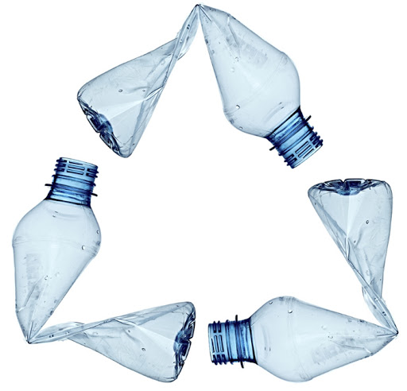
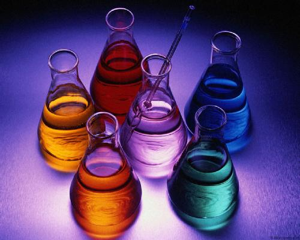
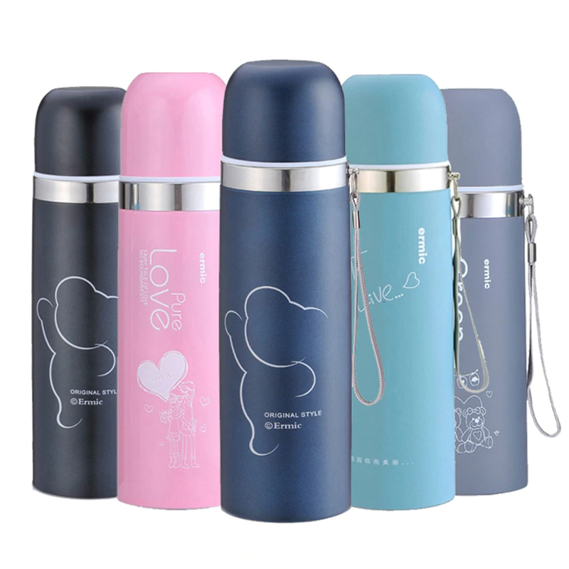
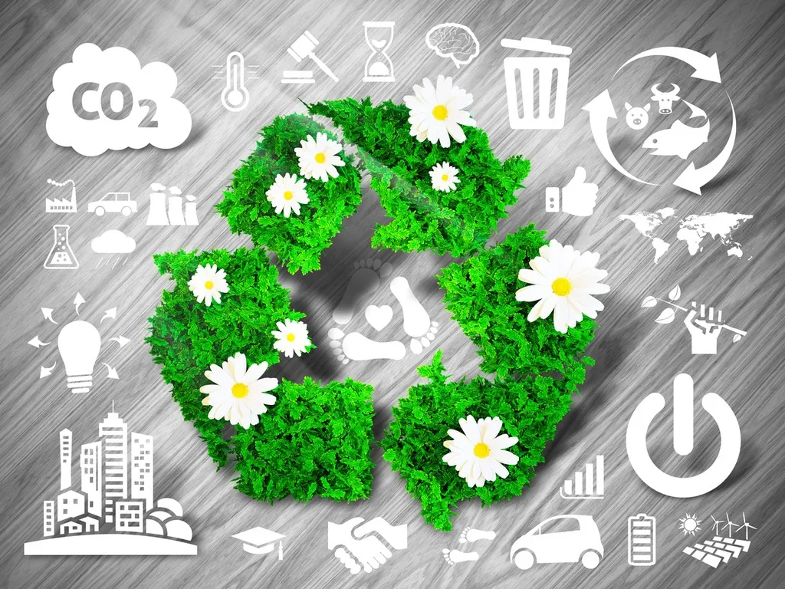

Los productos hechos con plástico se han desarrollado velozmente
y en grandes magnitudes. Sumado a que los precios pueden ser inferiores
a otros naturales y el perfeccionamiento de la tecnología, el uso de
plástico se ha incrementado y con ello su impacto.
El medio marino es el más afectado y su degradación es más perjudicial
que en tierra. Además, recibe el mayor porcentaje de los deshechos
plásticos. Según informes, reciben más de 200 kilos de plástico por segundo.
Entre 2010 y 2013 científicos que estudiaban el cambio climático en
los océanos detectaron 5 islas formadas por este material (2 en el
Pacífico, 2 en el Atlántico y 1 en el Índico).
En consecuencia, ecosistema y especies están amenazadas. Es conocido
el caso de tortugas y aves marinas que han muerto por la ingesta de
plástico que les ocasiona enredos, asfixia, estrangulación o desnutrición.
¿Te has preguntado qué consecuencias tiene reciclar el PET?

- Sustancias Quimicas:
- Algunos envases plásticos, entre ellos las botellas desechables,
están hechos por una sustancia química compuesta por bisfenol A
( BPA). Se ha comprobado que esta sustancia afecta la vida sexual
y reproductiva de los seres humanos, como el crecimiento de
próstata o deficiencia en el número de cromosomas en el óvulo;
es también relacionado con la obesidad y el cáncer de mama.
- Criadero de bacterias:
- Aunque nos parezca muy práctico y amigable para nuestros bolsillos,
el rellenar las botellas de plástico para beber agua es un riesgo
que nuestra salud termina padeciendo tarde o temprano.
Un artículo publicado por la revista Cosmopolitan nos revela que
la boquilla de dichas botellas son prácticamente un criadero de
bacterias. Este artículo se basó en un estudio de
‘treadmillreviews.net’ que se dio a la tarea de analizar las
botellas de plástico que un atleta había rellenado de agua durante
toda una semana. Los resultados de dicho estudio mostraron que
las botellas que había rellenado contenían más de 900.000 unidades
de bacterias. La falta de higiene en las manos, el mantener el
agua a temperatura ambiente o el no lavar continuamente las
botellas, son un factor clave para que las bacterias se acumulen
en los envases.
¿Que alternativas podemos usar?

Termos:
Una de las ventajas que nos proporciona utilizar este tipo de
materiales es que podemos conseguir tanto para bebidas frías o
calientes, y a la larga nos ahorra dinero, es mejor invertir en
algo que nos puede durar mucho tiempo a comprar diario una
botella de plástico, además son fáciles de lavar y desinfectar.
Si a pesar de todo esto, prefieres utilizar botellas desechables,
te recomendamos lavarlas bien todos los días y utilizar un poco
de vinagre para matar las bacterias que se puedan acumular
(ojo, esto no impedirá que las sustancias químicas se desprendan
de estos materiales).
Botellas biodegradables:
Ari Jonsson, estudiante de la Academia de Artes de Islandia,
dio a conocer en el festival de diseño, un descubrimiento a
partir de algas marinas para la creación de botellas desechables.
Está invención permite que las botellas mantengan su forma
mientras están llenas de líquido, pero en cuanto está vacía,
solo es cuestión de esperar para que comience a descomponerse.
Desventajas del reciclaje de PET.
El reciclaje de PET tiene ventajas que lo hacen un material
bueno para el almacenamiento de bebidas o insumos de consumo humano.
Por otro lado, tiene demasiadas desventajas que lo hacen un peligro
para la salud y el ambiente.
Más que desventajas propiamente dicho, el reciclaje presenta una serie
de inconvenientes o impedimentos, por así decirlo, entre ellas estan:

- Limitaciones:
- Es difícil su aplicación de forma generalizada. En gran parte
por la rápida obsolescencia de los mismos.
- Perdida o degradación:
- El reciclaje de materiales produce una cierta pérdida a causa de
la mezcla de los mismos o la degradación de las propiedades
de éstos. Esto dificulta la creación de un mercado de reciclaje.
- Mitos:
- Existe la creencia de que los materiales reciclados son de menor
calidad que los no reciclados.
- Gasto de energía:
- La recuperación de energía no es muy recomendable puesto que, en
realidad, no se aprovecha de manera óptima la fuente de materias
primas que ofrecen los residuos. Algunos procesos de reciclaje
arrojan residuos contaminantes.
- Emisiones contaminantes:
- El proceso de combustión en la recuperación de energía provoca una
nueva fuente de emisiones contaminantes. Debe ser una actividad
con una serie de fuertes controles
- Requerimientos legales:
- Los crecientes requerimientos, dificultades legales y costes que
suponen los vertederos para el vertido de productos
Estas dificultades son de tipo técnico, por asi llamarlas. Todas
dificultan los procesos de reciclaje.